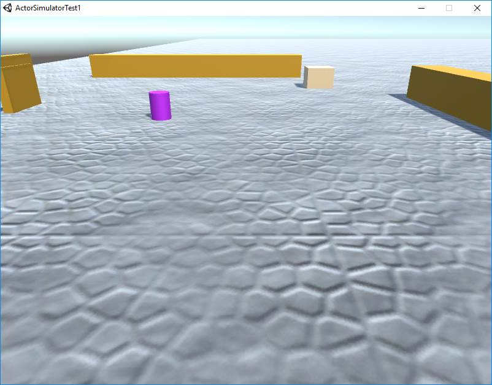
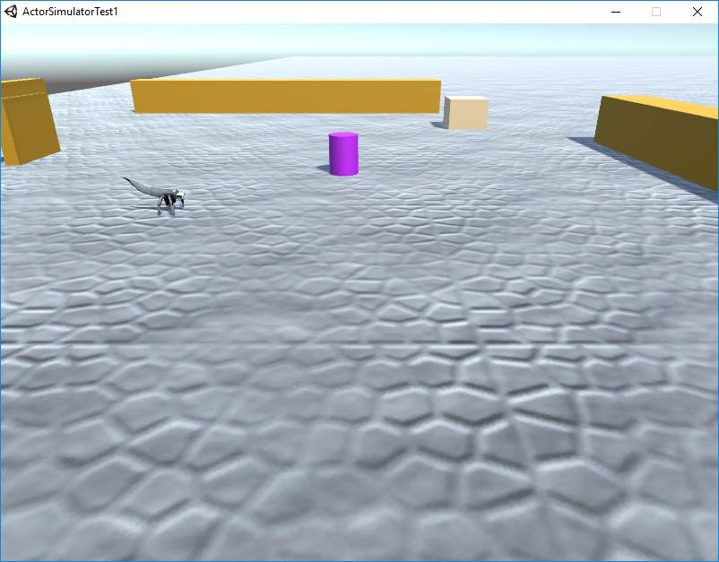

Game2017: hit-the-Light
VISION
GOALS
-------
public void workWithUnity( ){
initUnityConnection("127.0.0.1");
createSimulatedActor();
}
initUnityConnection( String ipaddr )This operations requires that a Unity scene is running (on the localhost 127.0.0.1). An exemple of a scene is introduced in section Uniy scenes
public void createSimulatedActor( String prefabs )This operation sends (via a TCP connection) a command (in QActor format) to create (in prefixed point of the scene) a virtual robot (named at the moment "robotfacade")
public void moveVirtualActor(String direction, float speed, float duration, float angle)This operation 'moves' the virtual-robot in the scene: For example:
Plan init normal
actorOp workWithUnity("127.0.0.1") ;
actorOp moveVirtualActor( "W", 30, 1, 0 )
sonarDetect : sonarDetect(X)Thsi event is sent (via the TCP connection) from Unity to the QActor system, that handles such an Unity-event as a conventional QActor event.
|  |  |